PROFILE

여러 환경과 문화를 경험하고 싶어 개발을 선택했습니다
서로 다른 분야에서도 계속 필요한 일을 고민하다가, 기술을 쌓으면서도 여러 도메인에 닿을 수 있는 개발을 발견했습니다.
SUNGWON NEWS NETWORK · PERSONAL EDITION
PROFILE

서로 다른 분야에서도 계속 필요한 일을 고민하다가, 기술을 쌓으면서도 여러 도메인에 닿을 수 있는 개발을 발견했습니다.
MAIN INTERVIEW
AI와 함께 결과물을 만드는 시대에도, 결국 자신의 언어로 설명할 수 있어야 비로소 배운 것이라고 생각합니다.
NEXT DESK
적은 명령으로도 원하는 결과를 만드는 방법을 고민하며 RAG와 MCP를 살펴보고 있습니다. 배경지식을 채워 프로그램 사이의 데이터를 자연스럽게 연결하는 것이 다음 목표입니다.
FRONT PAGE FEATURE
Q. 여러 진로 중에서 개발을 고른 이유가 궁금합니다.
평소 호기심이 많고 관심사가 넓은 편입니다. 많은 일을 해보고 싶다기보다 서로 다른 환경에 적응하면서 그 안의 문화를 경험하는 걸 좋아했어요. 그러다 여러 도메인에서 공통으로 필요한 일이 무엇일지 생각했고, 개발이 눈에 들어왔습니다. 기술력을 쌓을 수 있고 배운 것을 범용적으로 사용할 수 있다는 점이 매력적이었습니다.
처음에는 개발이 그저 추상적으로 어려웠습니다. 무엇을 모르고 있는지조차 구분하지 못했죠. 지금 돌아보면 코드를 따라 사고하는 방식에 익숙하지 않았던 것 같습니다. 컴퓨터 구조와 CS를 기초부터 꾸역꾸역 공부한 시간이 당장 완전히 이해되지 않더라도 지금의 사고방식을 만드는 데 도움이 됐습니다. 여전히 머릿속 아이디어를 코드로 옮기는 일은 어렵지만, 적어도 더 이상 막연하게만 어렵지는 않습니다. 하하.
LEARNING
학습하면서 질문을 따라가다 보면 범위가 넓어지고 처음 목표를 잊기도 합니다. 그래도 하나의 흐름을 끝까지 따라갔을 때 서로 떨어져 있던 개념이 연결되는 순간이 있었습니다. 무엇을 만들거나 배울 때 가장 중요하게 생각하는 기준은 그것을 제 언어로 표현할 수 있느냐입니다.
WHY CODYSSEY
웹 프론트엔드로 시작했지만 프로젝트를 진행할수록 직무 구분 없이 여러 영역을 조금씩 다루게 됐습니다. AI의 발전까지 보면서 무엇을 중심으로 공부할지 고민하던 중, 결과물을 만들고 동료 평가를 받는 코디세이 과정이 그 고민을 정리하는 데 도움이 될 것 같아 참여했습니다.
CODYSSEY REPORT
무엇을 완성했는지보다 어디에서 흥미를 느꼈고 무엇을 다시 생각하게 됐는지 중심으로 돌아봤습니다.
Shell은 기존에도 사용해서 명령어를 확인하며 과제를 진행할 수 있었습니다.
재미있었던 건 동료 평가에서 들은 touch 이야기였습니다. 파일 생성은
부수 효과이고 본래 기능은 timestamp 갱신이라는 설명에서 오래된 도구가 지금의
사용 방식으로 이어진 역사를 본 느낌이었어요.
Docker는 처음이어서 목적부터 시나리오를 세워 실습했습니다. 다음 Python 과제에서 필요한 3.10 버전과 로컬 환경이 달랐을 때 Docker로 해결해 보니, 공부한 내용을 바로 써먹는 경험이 확실한 동기부여가 됐습니다.
JavaScript 함수형 코드에 익숙한 상태에서 Python 클래스를 중심으로 기능을 나눠 구현했습니다. FM대로 나누느라 조금 과한 것 아니냐는 피드백도 받았죠. 그때 같은 기능에도 여러 답이 있을 수 있지만, 어떤 방법을 선택했든 근거를 설명할 수 있어야 한다는 점을 배웠습니다.
요구사항이 비어 보이는 부분에는 프로그램이 자연스럽게 진행되고 종료되도록 기능을 더했습니다. 평가자들이 그 의도를 알아봐 줬을 때, 같은 과제에도 제 생각을 넣는 것이 개발의 재미라는 느낌이 들었습니다.
두 입력 패턴 중 더 가까운 패턴을 찾는 계산기 과제였습니다. NPU 작동 방식의 기초라고 하니 문제를 이해하는 데부터 시간이 걸렸습니다. Codex의 Superpowers workflow로 설계하고 SOLID 원칙에 맞춰 클래스를 나누려 했고, 구조를 잡은 뒤에는 구현이 빠르게 진행됐습니다.
문제는 그다음이었습니다. 설계에 제 생각을 넣었다고 해서 완성된 코드를 모두 이해한 것은 아니었습니다. 네이밍 규칙을 정해 AI에 맡기면 알아볼 수 있을 거라 생각했지만 파일과 클래스가 많아지자 흐름을 따라가기 어려웠습니다. 평가에서 설명하는 동안 근거가 분명하지 않다는 사실을 스스로 느꼈고, 완성과 이해는 다르다는 점을 크게 배웠습니다.
이후에는 과제의 목적과 평가에서 설명해야 할 내용을 먼저 떠올리게 됐습니다. 혼자였다면 지나쳤을 부족함을 동료 평가가 보여줬습니다. 좋아하는 말인 “No pain, no gain”처럼 정말 힘들었던 만큼 많이 성장한 과제였습니다.
SKILLS DESK
기사의 의미와 읽는 순서를 시맨틱 구조로 표현합니다.
모바일부터 데스크톱까지 정보 위계를 레이아웃으로 만듭니다.
이벤트, 상태, DOM 업데이트의 연결을 직접 구현합니다.
작업의 이유와 변화를 커밋과 Pull Request로 기록합니다.
퀴즈와 계산기 과제에서 클래스와 데이터 흐름을 연습했습니다.
로컬 버전 차이를 격리된 실행 환경으로 해결해 봤습니다.
GITHUB PROJECTS
GitHub의 최신 정보와 각 프로젝트에서 직접 느낀 점을 한 기사 안에서 함께 보여줍니다.
프로젝트 취재를 준비하고 있습니다.
LIFE & CULTURE
꾸준한 취미라고 말할 만큼 자주 하지는 못하지만 요즘 시간을 내서 뛰려고 합니다. 예전보다 시작하기는 어렵지만, 달리고 난 뒤의 뿌듯함과 맑아지는 느낌이 좋습니다.
웹툰으로 보다가 뒷이야기가 너무 궁금해 원작 소설까지 모두 읽었습니다. 이야기를 풀어가는 방식과 유머가 잘 맞았고, 덕분에 교육장까지 가는 긴 통학 시간이 덜 따분했습니다.
몇 달을 고민한 끝에 꽤 무리해서 헤드폰을 샀습니다. 원래 음악을 자주 듣는 편은 아니었는데, 이전에는 놓쳤던 악기 소리가 들리면서 음악 감상도 새로운 취미가 됐습니다.
SEND A TIP
폼 검증을 학습하기 위한 제보함입니다. 입력 내용은 실제로 전송되지 않습니다.